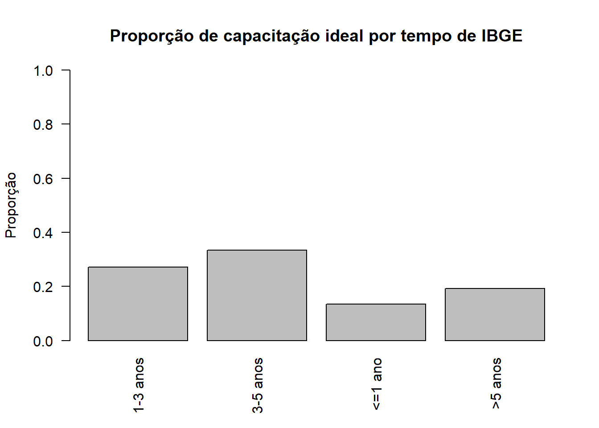

Capítulo 18 Capacitação Contínua
18.1 Gerenciando o Risco do Erro de Medição
Diagnóstico da Capacitação: O estudo diagnóstico revelou que a falta de reciclagem regular é um fator de risco para a qualidade:
- Para entrevistadores da PNAD Contínua: 58,3% dos que receberam treinamento completo estavam há mais de um ano sem reciclagem.
- Para atualizadores do CNEFE: 45,3% estavam há mais de um ano sem reciclagem.
Demanda por Treinamento (PNAD Contínua): * Trabalho: 68,1% (Maior demanda) * Outras formas de trabalho: 55,1% * Educação: 54,5%
Ações Sugeridas para a Gestão Contínua: * Manter e criar documentação atualizada e padronizada sobre capacitação. * Incluir na grade do treinamento completo da PNAD Contínua temas importantes como a identificação de domicílios e a abordagem ao informante. * Atuar junto às agências selecionadas para fazer um mapeamento completo da qualidade da coleta e implementar ações de melhoria.
Metáfora: Gerenciar a qualidade nas pesquisas é como pilotar um avião. O erro amostral é o vento esperado que afeta o voo, controlado pelos cálculos de rota (plano amostral). Já o erro não-amostral é o erro humano ou falha mecânica (como um treinamento deficiente ou um instrumento com defeito) que, se não for monitorado e corrigido ativamente (reentrevistas e observação), pode levar o avião para longe do destino verdadeiro (o valor real dos dados).
18.2 Exercícios - Capacitação Contínua
18.2.1 PNAD
Este capítulo usa um conjunto fictício de 300 entrevistadores para discutir capacitação, tempo de IBGE e tempo de experiência na PNAD Contínua.
set.seed(321)
library(dplyr)
n <- 300
entrevistadores <- tibble(
id = 1:n,
tempo_ibge = sample(c("<=1 ano", "1-3 anos", "3-5 anos", ">5 anos"),
size = n, replace = TRUE,
prob = c(0.20, 0.50, 0.15, 0.15)),
tempo_pnad = sample(c("<=6 meses", "6m-3 anos", "3-5 anos", ">5 anos"),
size = n, replace = TRUE,
prob = c(0.13, 0.65, 0.12, 0.10)),
leu_manual = rbinom(n, 1, 0.9), # 1 = leu integralmente, 0 = não
treinamento_comp= rbinom(n, 1, 0.8), # recebeu treinamento completo
considera_satisf= rbinom(n, 1, 0.9), # considera treinamento satisfatório
assistiu_exp = rbinom(n, 1, 0.6),
acompanhado_1 = rbinom(n, 1, 0.6)
) |>
mutate(
capac_ideal = if_else(
leu_manual == 1 &
treinamento_comp == 1 &
considera_satisf == 1 &
assistiu_exp == 1 &
acompanhado_1 == 1,
1L, 0L
)
)
dplyr::glimpse(entrevistadores)## Rows: 300
## Columns: 9
## $ id <int> 1, 2, 3, 4, 5, 6, 7, 8, 9, 10, 11, 12, 13, 14, 15, 16…
## $ tempo_ibge <chr> ">5 anos", ">5 anos", "1-3 anos", "1-3 anos", "1-3 an…
## $ tempo_pnad <chr> "6m-3 anos", "6m-3 anos", "3-5 anos", "6m-3 anos", "6…
## $ leu_manual <int> 1, 1, 1, 1, 1, 0, 0, 1, 1, 1, 1, 1, 1, 1, 1, 1, 1, 1,…
## $ treinamento_comp <int> 1, 0, 1, 1, 1, 1, 1, 1, 1, 1, 1, 1, 1, 1, 1, 1, 1, 1,…
## $ considera_satisf <int> 1, 1, 1, 1, 0, 1, 1, 1, 1, 1, 1, 1, 1, 1, 1, 1, 1, 1,…
## $ assistiu_exp <int> 1, 1, 1, 1, 0, 1, 1, 0, 1, 1, 0, 1, 0, 1, 0, 0, 0, 1,…
## $ acompanhado_1 <int> 1, 0, 1, 0, 1, 0, 0, 0, 1, 1, 0, 1, 1, 1, 0, 1, 0, 1,…
## $ capac_ideal <int> 1, 0, 1, 0, 0, 0, 0, 0, 1, 1, 0, 1, 0, 1, 0, 0, 0, 1,…18.2.1.1 Exercício 3 – Proporção de “capacitação ideal”
- Calcule a proporção de entrevistadores com
capac_ideal == 1. - Calcule um intervalo de confiança (95%) para essa proporção.
- Interprete o resultado: o que isso diz sobre o “cenário de capacitação”?
## [1] 0.2333333# IC aproximado usando normal
n <- nrow(entrevistadores)
se <- sqrt(prop_capac_ideal * (1 - prop_capac_ideal) / n)
ic_inf <- prop_capac_ideal - 1.96 * se
ic_sup <- prop_capac_ideal + 1.96 * se
c(ic_inf, ic_sup)## [1] 0.1854717 0.281194918.2.1.2 Exercício 4 – Associação entre tempo de IBGE e capacitação ideal
- Produza uma tabela de contingência entre
tempo_ibgeecapac_ideal. - Calcule a proporção de capacitação ideal em cada categoria de
tempo_ibge. - Faça um gráfico de barras dessas proporções.
- Discuta: entrevistadores mais antigos parecem mais bem capacitados?
tab <- entrevistadores |>
group_by(tempo_ibge) |>
summarise(
n = n(),
prop_capac_ideal = mean(capac_ideal)
)
tab## # A tibble: 4 × 3
## tempo_ibge n prop_capac_ideal
## <chr> <int> <dbl>
## 1 1-3 anos 140 0.271
## 2 3-5 anos 39 0.333
## 3 <=1 ano 74 0.135
## 4 >5 anos 47 0.191barplot(tab$prop_capac_ideal,
names.arg = tab$tempo_ibge,
las = 2,
main = "Proporção de capacitação ideal por tempo de IBGE",
ylab = "Proporção",
ylim = c(0, 1))
18.2.2 CNEFE
Agora vamos trabalhar com um conjunto fictício de 200 atualizadores do CNEFE, incluindo informações sobre uso de ferramentas (como prismA e Google Earth).
set.seed(456)
library(dplyr)
m <- 200
atualizadores <- tibble(
id = 1:m,
tempo_ibge = sample(c("<=1 ano", "1-3 anos", "3-5 anos", ">5 anos"),
size = m, replace = TRUE,
prob = c(0.15, 0.50, 0.10, 0.25)),
tempo_cnefe = sample(c("<=6 meses", "6m-3 anos", "3-5 anos", ">5 anos"),
size = m, replace = TRUE,
prob = c(0.11, 0.69, 0.13, 0.07)),
leu_manual = rbinom(m, 1, 0.9),
treinamento = rbinom(m, 1, 0.8),
considera_satisf= rbinom(m, 1, 0.92),
assistiu_exp = rbinom(m, 1, 0.5),
acompanhado_1 = rbinom(m, 1, 0.5),
usa_prisma = rbinom(m, 1, 0.4),
usa_google_earth= rbinom(m, 1, 0.7)
) |>
mutate(
capac_ideal = if_else(
leu_manual == 1 &
treinamento == 1 &
considera_satisf == 1 &
assistiu_exp == 1 &
acompanhado_1 == 1,
1L, 0L
)
)
dplyr::glimpse(atualizadores)## Rows: 200
## Columns: 11
## $ id <int> 1, 2, 3, 4, 5, 6, 7, 8, 9, 10, 11, 12, 13, 14, 15, 16…
## $ tempo_ibge <chr> "1-3 anos", "1-3 anos", ">5 anos", "<=1 ano", "<=1 an…
## $ tempo_cnefe <chr> "6m-3 anos", "6m-3 anos", "3-5 anos", "6m-3 anos", "6…
## $ leu_manual <int> 1, 1, 1, 1, 1, 1, 1, 0, 1, 1, 1, 1, 1, 1, 1, 1, 1, 1,…
## $ treinamento <int> 1, 0, 1, 0, 1, 0, 0, 1, 1, 0, 1, 0, 1, 0, 1, 1, 0, 0,…
## $ considera_satisf <int> 1, 1, 1, 1, 1, 1, 1, 1, 1, 1, 1, 1, 1, 1, 1, 1, 0, 1,…
## $ assistiu_exp <int> 1, 0, 0, 1, 0, 0, 1, 1, 0, 0, 0, 0, 0, 0, 1, 0, 0, 1,…
## $ acompanhado_1 <int> 0, 0, 1, 0, 0, 1, 0, 0, 1, 0, 0, 0, 0, 0, 1, 0, 1, 0,…
## $ usa_prisma <int> 1, 1, 0, 1, 0, 1, 1, 0, 0, 1, 0, 0, 0, 0, 0, 1, 0, 0,…
## $ usa_google_earth <int> 1, 1, 0, 1, 0, 1, 1, 1, 1, 1, 1, 1, 1, 1, 1, 1, 0, 0,…
## $ capac_ideal <int> 0, 0, 0, 0, 0, 0, 0, 0, 0, 0, 0, 0, 0, 0, 1, 0, 0, 0,…18.2.2.1 Exercício 5 – Comparando PNAD x CNEFE
- Calcule a proporção de
capac_idealentre entrevistadores (PNAD) e atualizadores (CNEFE). - Monte uma pequena tabela comparativa com essas duas proporções.
- Interprete: em qual operação a “capacitação ideal” está mais crítica?
prop_pnad <- mean(entrevistadores$capac_ideal)
prop_cnefe <- mean(atualizadores$capac_ideal)
tibble(
pesquisa = c("PNAD Contínua", "CNEFE"),
prop_capac_ideal = c(prop_pnad, prop_cnefe)
)## # A tibble: 2 × 2
## pesquisa prop_capac_ideal
## <chr> <dbl>
## 1 PNAD Contínua 0.233
## 2 CNEFE 0.15518.2.2.2 Exercício 6 – Uso de ferramentas e demanda por treinamento
Suponha que a coordenação queira priorizar um treinamento de prismA.
- Calcule a proporção de atualizadores que utilizam
usa_prisma == 1. - Suponha que 70% dos que não usam prismA declararam interesse em um treinamento
(variável fictícia
interesse_prisma, simulada abaixo). - Calcule a proporção de interesse entre usuários e não usuários.
set.seed(789)
atualizadores <- atualizadores |>
mutate(
interesse_prisma = if_else(
usa_prisma == 1,
rbinom(n(), 1, 0.3), # quem já usa, menos interesse em treinamento
rbinom(n(), 1, 0.7) # quem não usa, mais interesse
)
)
prop_usa <- mean(atualizadores$usa_prisma)
prop_usa## [1] 0.375# Proporção de interesse por grupo
atualizadores |>
group_by(usa_prisma) |>
summarise(prop_interesse = mean(interesse_prisma))## # A tibble: 2 × 2
## usa_prisma prop_interesse
## <int> <dbl>
## 1 0 0.6
## 2 1 0.253